Sentinel-1 PS-InSAR·SBAS 지반변위 분석 (국내 7개 지역 + 광역 + 하강궤도)Sentinel-1 PS-InSAR and SBAS Ground Deformation (7 Korean sites, metro-scale, ascending + descending)
국내 대형 손해보험사와의 지반침하 PoC에서 사고 지역 7곳의 지표 변위를 Sentinel-1로 측정했다. 같은 코레지 스택에서 PS-InSAR(StaMPS)와 자체 SBAS를 함께 돌려 PS 2만8천~20만 점/지역, 수도권 광역 SBAS 107만 픽셀을 만들고, 하강궤도 재처리로 수직·동서 성분을 분리했다. 두 기법 비교와 하강궤도 공백(2022~2024)처럼 잘 안 된 부분도 수치로 남겼다.Measured surface deformation at seven Korean ground-collapse sites for a ground-subsidence PoC with a major Korean P&C insurer. PS-InSAR (StaMPS) and an in-house SBAS ran on the same coregistered Sentinel-1 stacks, giving 28k–206k PS points per site and a 1.07M-pixel SBAS map of the Seoul metro area; descending-orbit reprocessing separated vertical and east-west motion. Where things did not work (PS/SBAS disagreement, the 2022–2024 descending data gap), the numbers are recorded as well.
배경 · 목표Background
- 지반침하·함몰 사고 지역에서 사고 전 지표 변위가 위성으로 보이는지 확인하는 것이 출발점. 고객 PoC의 위험도 판정에 쓸 변위 입력을 만드는 역할.
- 대상 7개 AOI: 서울 강동(명일동)·서대문(연희동), 경기 광명(터널 굴착), 부산 사상~하단(도시철도), 부산 만덕~센텀(대심도, 비교 기준), 인천 송도(매립지 압밀, 비붕괴 기준), 강원 양양(해안 모래지반).
- PS는 건물·구조물 같은 영구산란체에 강하고 SBAS는 도로·공터 같은 분산 산란체를 덮는다. 강동 싱크홀 지점은 도로라 초기 PS의 최근접 점이 80m 떨어져 있었고, 이것이 SBAS를 함께 돌리게 된 계기.
- Starting question: is pre-collapse surface motion visible from space at ground-collapse sites? The output feeds the risk grading of the client PoC.
- Seven AOIs: Seoul Gangdong and Seodaemun, Gwangmyeong (tunnel excavation), Busan Sasang–Hadan (metro line), Busan Mandeok–Centum (deep tunnel, reference case), Incheon Songdo (reclaimed-land consolidation, non-collapse reference), Yangyang (coastal sand).
- PS works on persistent scatterers such as buildings, SBAS covers distributed scatterers such as roads and open ground. At the Gangdong sinkhole (a road) the nearest early PS point was 80 m away, which is why SBAS was added.
방법Method
- 코레지: ISCE2 topsStack. 부산은 run_files 단계마다 씬별 독립 명령을 8개 병렬 실행해 170~212씬을 약 2시간에 처리(순차 10시간 이상). 서울 196씬 스택은 강동·서대문·광명·송도가 공유.
- PS: StaMPS Python 포팅판, 진폭분산 0.4, 결맞음 0.4 출력. 기준점 2버전(전역평균 차감 전 / 반경 150m·PS 15개 이상 안정영역 자동선정 차감 후).
- PS 메모리 문제 해결: ps_select가 PS 픽셀마다 큰 딕셔너리를 pickle해 90GB에서도 OOM. multiprocessing.Pool을 치환해 공통 객체를 fork로 공유하고 워커를 주기적으로 재생성 → 약 6.4GB로 고정. 원 패키지는 손대지 않고 import만으로 적용.
- SBAS: MintPy 알고리즘을 numpy로 직접 구현. 9×3 멀티룩, 연결 4개·72일 이내 쌍, snaphu 언랩, 최대결맞음 픽셀 기준, 결맞음 가중 역산, 에폭별 평면 제거, 시간결맞음 0.7 이상만 채택.
- 광역 SBAS: 프레임을 87개(수도권)·44개(부산) 픽셀창 타일로 나눠 처리. 채택률이 낮은 큰 타일은 2×2로 다시 쪼개고, 타일 간 차이를 중첩부에서 평면(a+bX+cY) 최소제곱으로 맞춰 병합.
- 하강궤도: path 134·61 SLC 264장(1.35TB) 수신 → 5개 AOI SBAS → 55m 격자에서 상승·하강 LOS를 2×2 연립으로 풀어 수직·동서 성분 분리(남북 성분 무시).
- PS–SBAS 비교: 300m 공통 격자에 집계하고 기준점 차이(중앙 오프셋)를 뺀 뒤 상관 r과 잔차 RMS로 판정.
- Coregistration: ISCE2 topsStack. For Busan, per-scene commands in each run_files step ran 8-way parallel, bringing 170–212 scenes down to about 2 h (10+ h sequential). The 196-scene Seoul stack is shared by Gangdong, Seodaemun, Gwangmyeong and Songdo.
- PS: Python port of StaMPS, amplitude dispersion 0.4, coherence 0.4 output. Two reference versions: global mean (before) and an automatically picked stable area (150 m radius, at least 15 PS) (after).
- PS memory fix: ps_select pickled a large dict once per PS pixel and ran out of memory even at 90 GB. Replacing multiprocessing.Pool so shared objects are inherited by fork and workers are recycled periodically held memory at about 6.4 GB. The upstream package is untouched; the patch applies on import.
- SBAS: MintPy's algorithm re-implemented in numpy. 9×3 looks, up to 4 links within 72 days, snaphu unwrapping, max-coherence reference pixel, coherence-weighted inversion, per-epoch plane removal, temporal coherence ≥ 0.7.
- Metro-scale SBAS: frames split into 87 (Seoul) and 44 (Busan) pixel-window tiles. Large tiles with low acceptance were re-split 2×2, and tiles were merged by solving a per-tile correction plane (a + bX + cY) on the overlaps by least squares.
- Descending: 264 SLCs (1.35 TB) from paths 134 and 61 → SBAS for 5 AOIs → ascending and descending LOS solved as a 2×2 system on a 55 m grid for vertical and east-west motion (north-south ignored).
- PS vs SBAS: both aggregated to a common 300 m grid, the reference offset (median difference) removed, then correlation r and residual RMS.
결과Results
- PS 점 수(차감 후 최종): 강동 96,537 · 서대문 129,712 · 광명 56,694 · 부산 만덕 150,978 · 사상 27,826 · 송도 205,562 · 송도 하강 126,271 · 양양 41,324.
- SBAS 픽셀: 강동 30,574 · 서대문 27,190 · 광명 13,662 · 만덕 39,850 · 사상 6,250 · 송도 32,456 · 양양 6,120. 송도 매립지 SBAS 속도 최솟값 −94.9 mm/yr.
- 강동 싱크홀 지점: 최종 SBAS가 23m 거리에서 측정점 확보(50m 내 3셀 중앙 −6.9 mm/yr). 최종 PS는 62m가 최근접.
- 광역 SBAS: 수도권 1,069,782 픽셀(196 에폭, 속도 1~99% −8.0~+4.3 mm/yr), 부산 239,653 픽셀(212 에폭, −15.8~+5.3). 타일 중첩부 잔차 RMS 1.53·1.69 mm/yr.
- PS vs SBAS(300m 격자): 서대문 r 0.40·잔차 0.55 mm/yr, 강동 0.23·0.95, 광명 0.30·1.21, 만덕 0.19·1.41 → 도심 저변형 지역은 기준점 차이를 빼면 약 1 mm/yr 안에서 일치. 사상 0.36·3.8 부분 일치.
- 불일치: 송도 r −0.03·잔차 14.4 mm/yr. PS는 말뚝 기초 구조물(|v| 중앙 0.38)을, SBAS는 매립 지반(18.4)을 재고 있어 측정 대상 자체가 다름. 양양 r 0.01 — 2년·38씬 짧은 스택이라 SBAS가 노이즈 수준(전체 시간결맞음 중앙 0.18).
- 하강궤도 공백: 2022~2024년 하강궤도 촬영이 path 134에서 1장, path 61에서 2장뿐(Sentinel-1B 고장 이후). 2022년 이후 사고는 하강궤도로 검증할 수 없었음.
- 수직/동서 분해: 5개 AOI 3,131~16,144 셀, 공통 88~118 에폭. 사상 수직 속도 하위 1% −17.6 mm/yr. 저장 결과를 다시 풀어 0.0001 mm 이내로 재현.
- PS points (final, after referencing): Gangdong 96,537 · Seodaemun 129,712 · Gwangmyeong 56,694 · Busan Mandeok 150,978 · Sasang 27,826 · Songdo 205,562 · Songdo descending 126,271 · Yangyang 41,324.
- SBAS pixels: Gangdong 30,574 · Seodaemun 27,190 · Gwangmyeong 13,662 · Mandeok 39,850 · Sasang 6,250 · Songdo 32,456 · Yangyang 6,120. Minimum SBAS rate on Songdo reclaimed land −94.9 mm/yr.
- Gangdong sinkhole: the final SBAS has a measurement 23 m away (median −6.9 mm/yr over 3 cells within 50 m); the nearest final PS point is 62 m away.
- Metro-scale SBAS: Seoul 1,069,782 pixels (196 epochs, 1st–99th percentile −8.0 to +4.3 mm/yr), Busan 239,653 pixels (212 epochs, −15.8 to +5.3). Tile-overlap residual RMS 1.53 and 1.69 mm/yr.
- PS vs SBAS (300 m grid): Seodaemun r 0.40 / residual 0.55 mm/yr, Gangdong 0.23 / 0.95, Gwangmyeong 0.30 / 1.21, Mandeok 0.19 / 1.41 — in low-deformation urban areas the two agree to about 1 mm/yr once the reference offset is removed. Sasang 0.36 / 3.8, partial agreement.
- Disagreement: Songdo r −0.03, residual 14.4 mm/yr. PS tracks pile-founded structures (median |v| 0.38) while SBAS tracks the reclaimed ground (18.4), so they measure different targets. Yangyang r 0.01: with only 38 scenes over two years SBAS is at noise level (median temporal coherence 0.18).
- Descending gap: in 2022–2024 there was 1 descending scene on path 134 and 2 on path 61 (after the Sentinel-1B failure), so collapses after 2022 could not be checked with descending data.
- Vertical/east-west decomposition: 3,131–16,144 cells and 88–118 common epochs per AOI; Sasang vertical rate 1st percentile −17.6 mm/yr. Re-solving the stored inputs reproduces the outputs within 0.0001 mm.
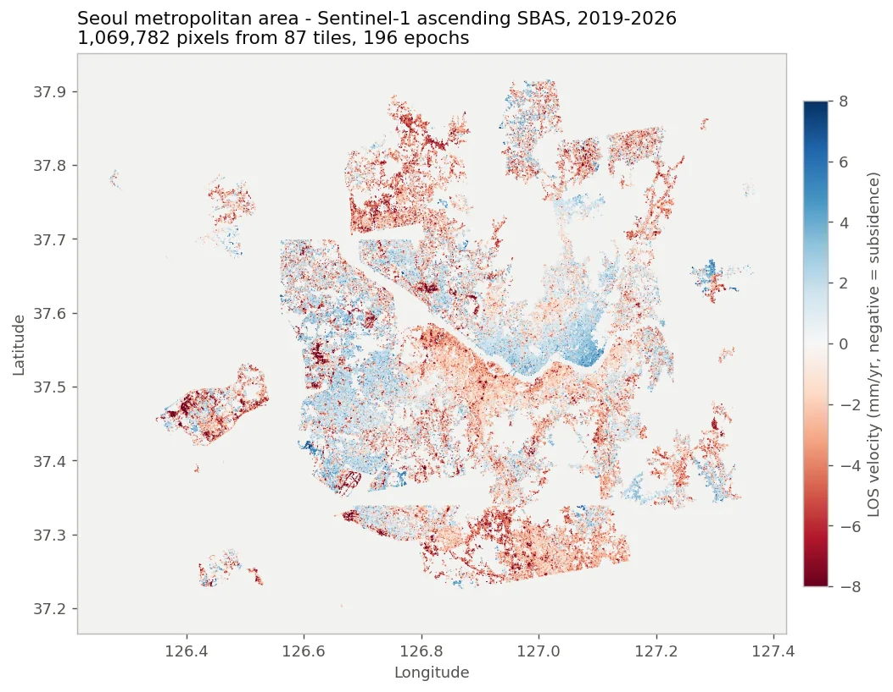
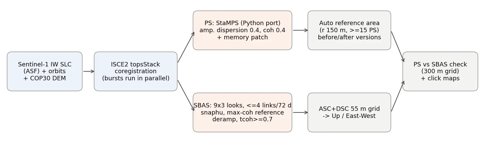
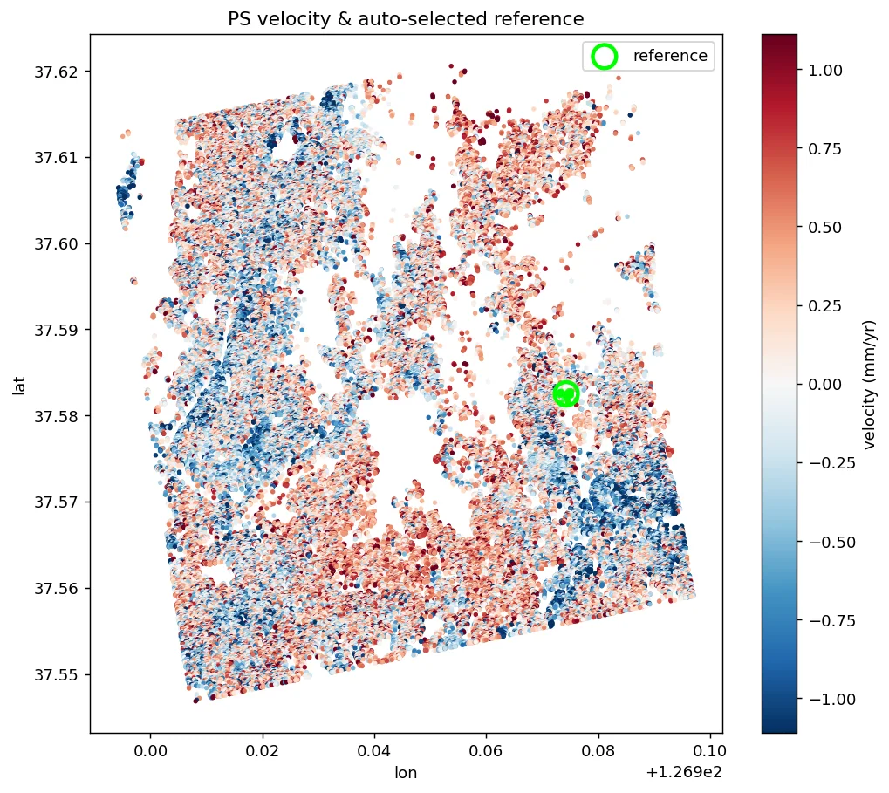
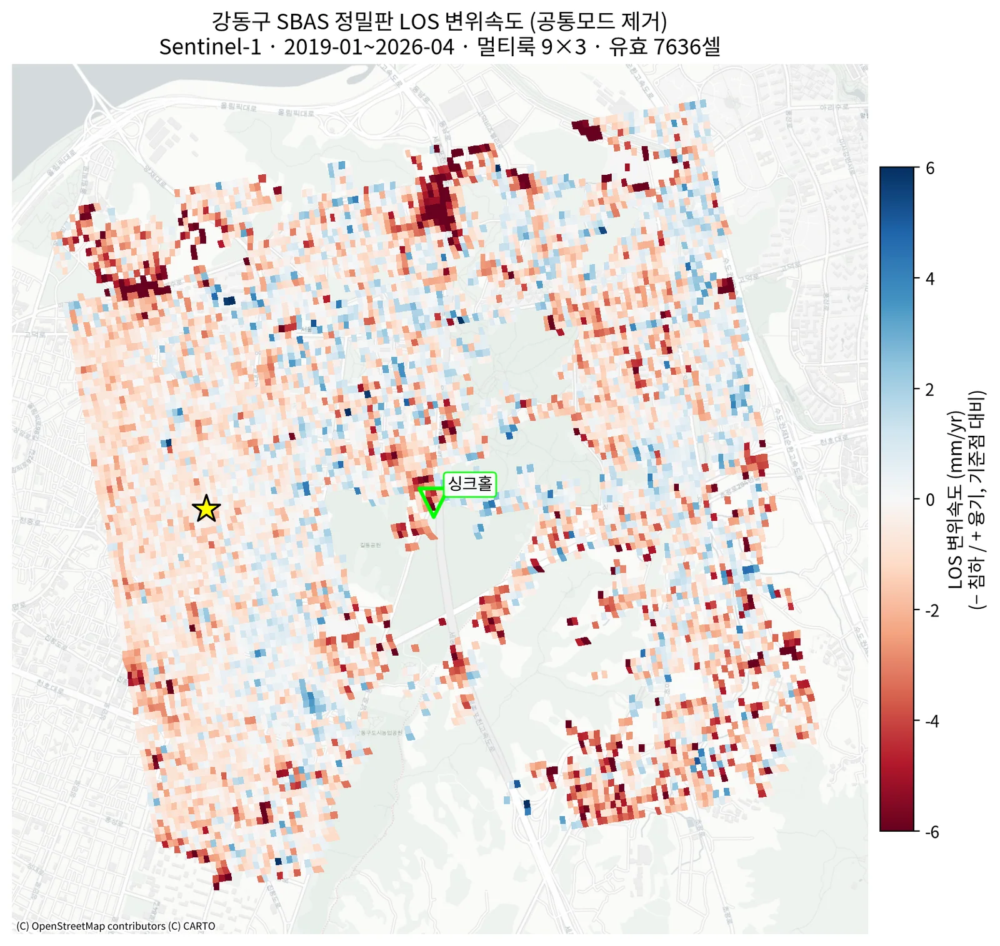
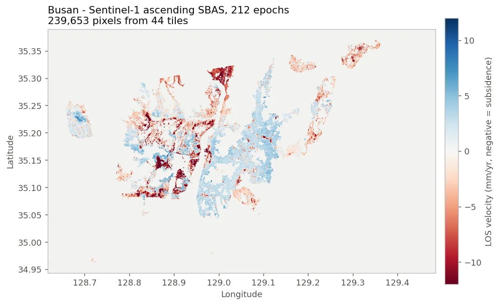
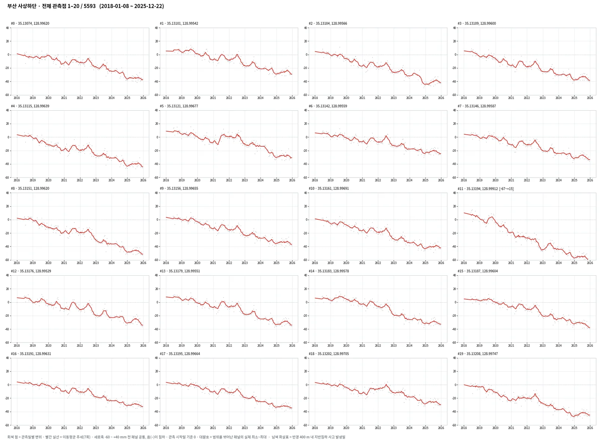
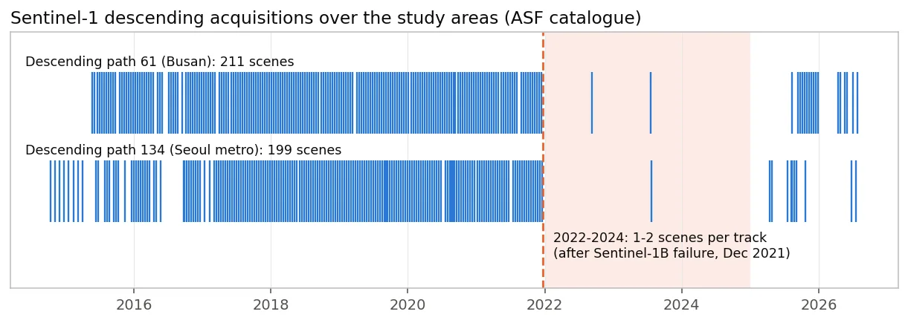
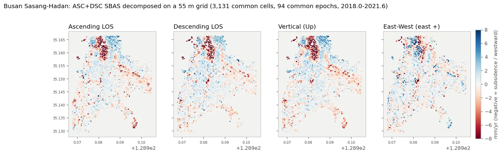
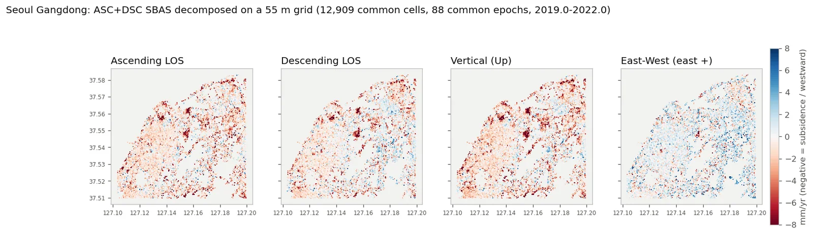
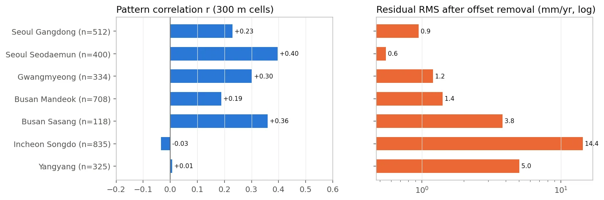
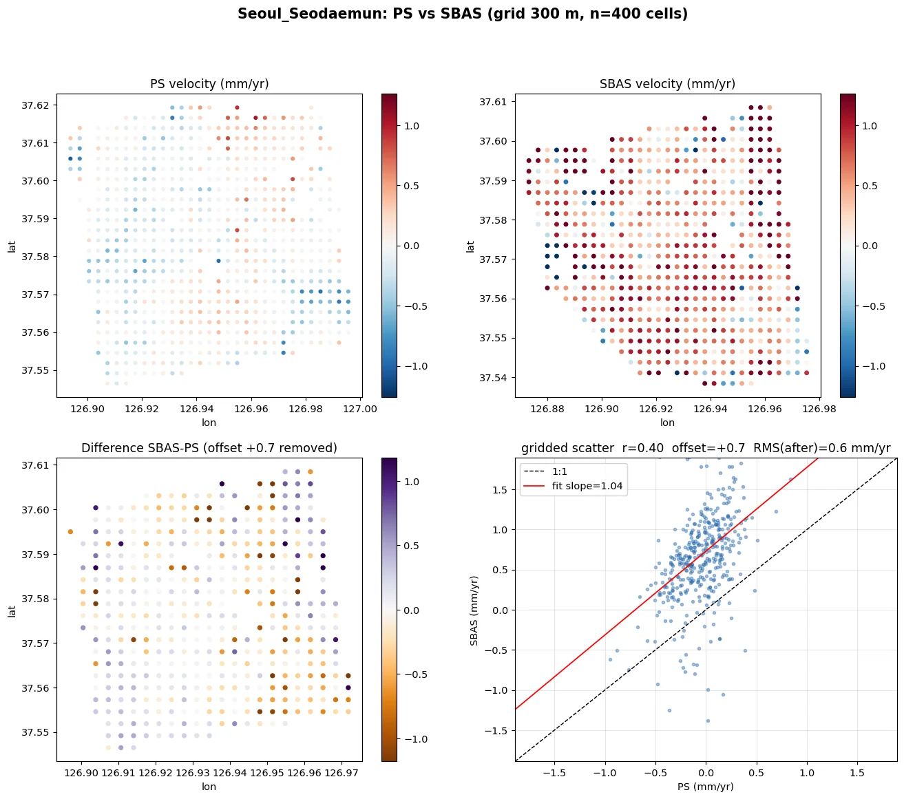
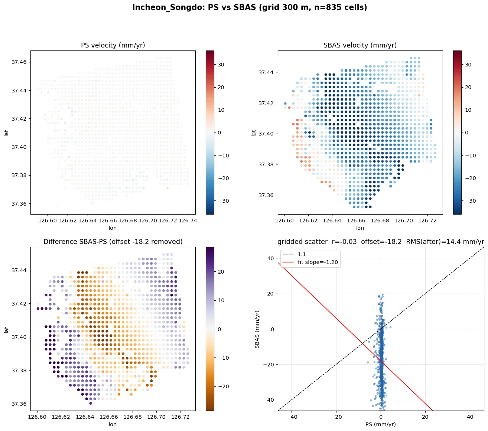
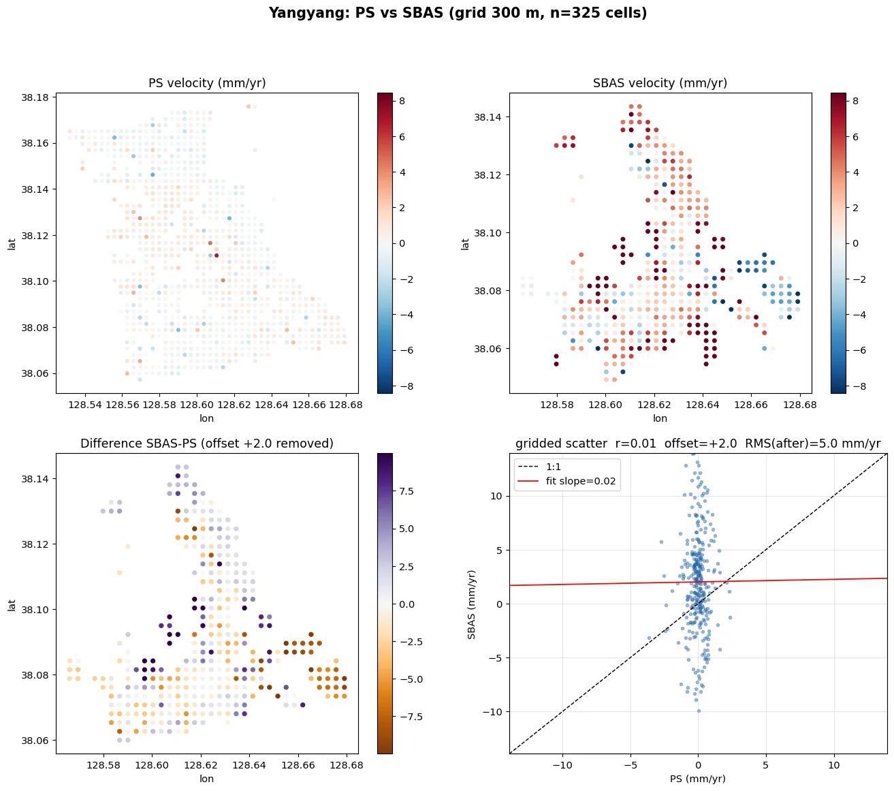
배운 점 · 한계What I learned · Limitations
- 낮은 r이 곧 불일치는 아님: 실제 변형이 거의 없는 도심에서는 r 0.19~0.40이어도 오프셋 제거 후 잔차가 0.6~1.4 mm/yr. 판정은 r과 잔차 RMS를 같이 봐야 함.
- PS와 SBAS는 서로 다른 산란체를 잰다. 송도처럼 구조물과 지반이 따로 움직이면 두 결과가 맞지 않는 것이 정상이고, 점 대 점 비교는 의미가 없음(격자 집계 필요).
- SBAS 노이즈 바닥 약 1~2 mm/yr. 도심 미세 변형은 PS가 유리하고, PS가 없는 도로·공터는 SBAS가 메움.
- 한계: 셀 단위 상승–하강 LOS 속도 상관이 0.09~0.44로 낮음. 궤도마다 기준 픽셀이 다르고 도심 저변형 지역은 노이즈가 신호보다 큼. 이 문제는 해결하지 못함.
- 한계: 짧은 스택(양양 38씬)의 SBAS는 쓸 수 없는 수준이었고, 하강궤도 2022~2024 공백은 데이터 자체가 없어 대안이 없었음.
- 한계: 도심 PS 속도는 99%가 ±2.5 mm/yr 안에 들어 SBAS보다 범위가 훨씬 좁음. 구조물 선택 효과와 필터 평활 효과를 분리하지 못함.
- 공통성분(전 픽셀 공통 추세) 제거 판정이 상승·하강에서 정반대로 나와(상승은 사상, 하강은 만덕만 제거) 이 성분은 지반 신호가 아니라 스택별 아티팩트로 판단.
- 운영 교훈: 메모리 상한을 걸수록 systemd-oomd에 더 빨리 죽음(24GB 상한에서 시스템 여유 101GB인데 31분 만에 종료). 원인 쪽(GDAL 캐시 512MB, pickle 제거)에서 줄여야 함.
- 이상치는 지우지 않기로 함: 싱크홀 감시에서는 급변이 곧 신호일 수 있음. 원인별 진단 방침(공간 일관성·지속성)만 정하고 적용은 보류.
- Low r does not mean disagreement: in stable urban areas r was only 0.19–0.40, yet the residual after offset removal was 0.6–1.4 mm/yr. Judge with r and residual RMS together.
- PS and SBAS measure different scatterers. Where structures and ground move separately, as at Songdo, disagreement is expected and point-to-point comparison is meaningless; aggregate to a grid first.
- SBAS noise floor is about 1–2 mm/yr. PS is better for small urban motion; SBAS fills roads and open ground where PS has no points.
- Limitation: per-cell ascending vs descending LOS rate correlation is only 0.09–0.44, because reference pixels differ per track and noise exceeds signal in stable urban areas. Not resolved.
- Limitation: SBAS on a short stack (Yangyang, 38 scenes) was unusable, and the 2022–2024 descending gap has no workaround because the data do not exist.
- Limitation: 99% of urban PS rates fall within ±2.5 mm/yr, far narrower than SBAS. The effects of scatterer selection and filter smoothing were not separated.
- The common-mode trend test gave opposite answers on the two orbits (removed at Sasang in ascending, only at Mandeok in descending), so the component was treated as a stack artefact, not ground motion.
- Operations: tighter memory caps made systemd-oomd kill jobs sooner (a 24 GB cap died in 31 min with 101 GB free). Memory had to be reduced at the source (GDAL cache 512 MB, no per-pixel pickling).
- Outliers are kept: in sinkhole monitoring a sudden jump may be the signal. A cause-based diagnosis policy (spatial consistency, persistence) was agreed but not yet applied.
관련 코드Code
저장소는 센서 → 위성 → 기법 순으로 정리돼 있고, 각 폴더에 입력·출력 표가 있습니다.The repository is organised by sensor, satellite and technique; each folder documents its inputs and outputs.
산출물Deliverables
- 지역별 PS(차감 전·후·raw) shp와 SBAS csv/shp, 클릭맵 HTML(점 클릭 시 시계열)
- 수도권·부산 광역 SBAS 병합본(시계열 포함 csv.gz)
- 하강궤도 SBAS 5지역 + 수직·동서 분해 csv 4세트×5지역 + 통합 지도 HTML
- PS vs SBAS 비교 그림·요약표
- 관측점 시계열 그래프 7,516장(7지역 133,814점)
- 일반화 처리 스크립트(코레지 병렬·PS·SBAS·광역 타일·분해·비교)
- Per-site PS shapefiles (before/after/raw referencing), SBAS csv/shp, click-to-time-series HTML maps
- Merged metro-scale SBAS for Seoul and Busan (csv.gz with time series)
- Descending SBAS for 5 sites, 4 decomposition sets per site, combined HTML maps
- PS vs SBAS comparison figures and summary table
- 7,516 time-series sheets covering 133,814 points at 7 sites
- Generalised scripts: parallel coregistration, PS, SBAS, tiling, decomposition, comparison
원본 보고서와 발표자료는 사내 자료로 공개하지 않습니다. 분석 코드는 GitHub에 정리되어 있습니다.Source reports and decks are internal and not published here. Analysis code is organised on GitHub.